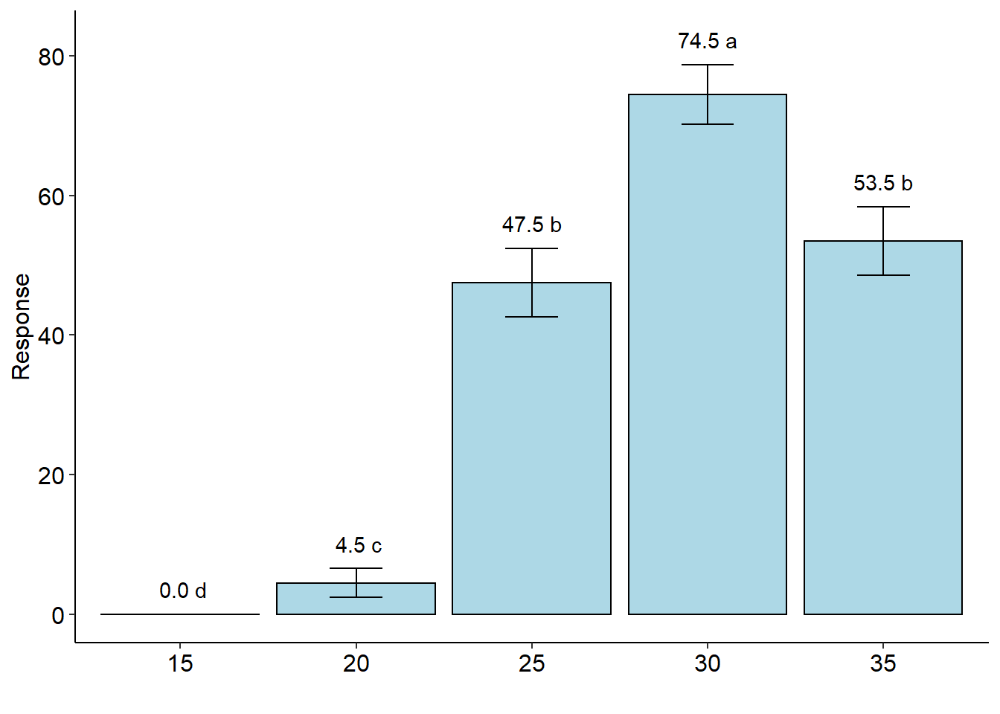

Capítulo 7 DIC e DBC por glm
rm(list=ls())
data("aristolochia")
attach(aristolochia)## The following object is masked from enxofre:
##
## resp## The following object is masked from cloro:
##
## resp## The following object is masked from pomegranate:
##
## tratresp=resp/4 # total germinated seeds
# the value 25 is the total of seeds in the repetition
DIC.glm(trat, cbind(resp,25-resp), glm.family="binomial")##
##
## -----------------------------------------------------------------
## Analysis of deviance
## -----------------------------------------------------------------
##
## Null deviance 1079.917
## Df Null deviance 79.000
## -----
## Residual deviance 173.344
## Df residual deviance 75.000
## p-value(Chisq) 0.000
## -----
## AIC 368.183## As the calculated p-value, it is less than the 5% significance level.The hypothesis H0 of equality of means is rejected. Therefore, at least two treatments differ##
##
## -----------------------------------------------------------------
## Multiple Comparison Test
## -----------------------------------------------------------------
## trat prob SE asymp.LCL asymp.UCL .group
## 15 15 0.00 0.00 0.00 0.00 d
## 20 20 0.05 0.01 0.02 0.07 c
## 25 25 0.47 0.02 0.43 0.52 b
## 30 30 0.74 0.02 0.70 0.79 a
## 35 35 0.53 0.02 0.49 0.58 b